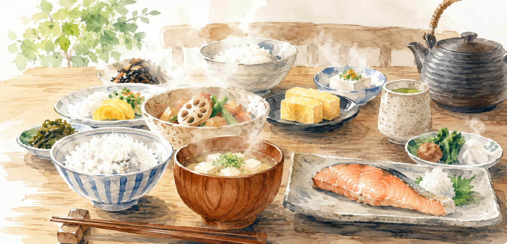
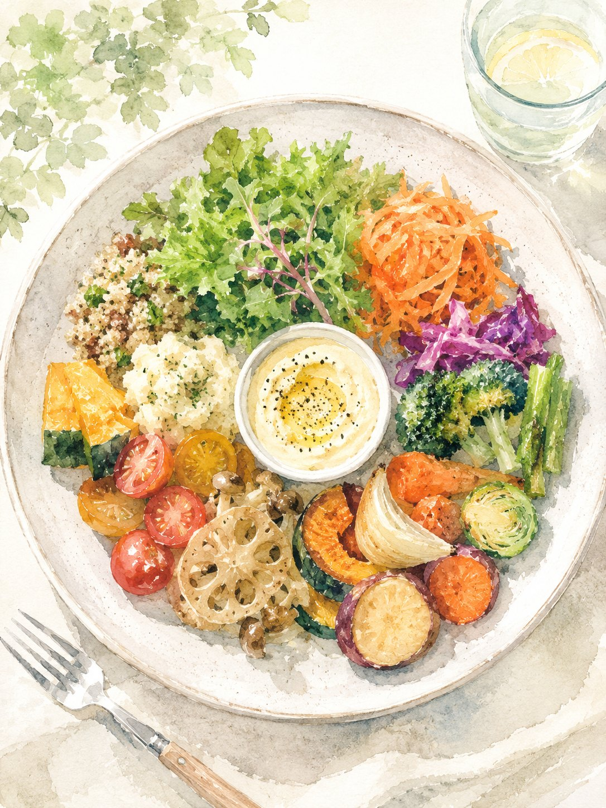

リアルな声を聞かせてください。
減塩や日々の食事管理について、皆さまが実際にどう感じ、どう工夫しているか。ありのままのお考えを聞かせてください。
調査の目的
日々の食事や健康との向き合い方は、人それぞれです。減塩や食事管理について、実際にどのように感じ、工夫されているか。多様な声を丁寧にうかがい、これからの食のあり方を考える手がかりとさせていただきます。

アンケート調査について
認知心理学の視点から、より良い食体験について研究をしています。良い点も難しい点も含め、皆さまの率直な実感を教えていただくことが、私たちの学びになります。正解や期待する答えはありません。
対象となる方（ご本人、またはご家族）
回答内容は研究およびサービス開発の目的のみに使用し、第三者へ提供することはありません。セールス等のご連絡は一切ございません。
Webアンケート
普段の食事管理やお悩みについて、簡単な質問にご回答ください。所要時間 約2分（この段階での謝礼はございません）。
オンライン取材
回答内容をもとに、事務局より15分程度のオンライン取材（Zoom等）をご相談します。ご協力は任意です。
謝礼の進呈
オンライン取材にご協力いただいた方へ、Amazonギフトカード500円分を進呈いたします。
株式会社レシピオブライフによる食の体験に関する研究・開発プロジェクトです。
アンケートに回答する Googleフォームが開きます（所要時間 約2分）株式会社レシピオブライフは、「行動につながるおいしさをつくる」をミッションに掲げ、食体験設計を強みとするブランドプロデュース会社です。これまでに累計3,000レシピ、飲食ブランド50以上のプロデュースに携わっています。死ぬ間際までおいしく食べられる世の中を目指し、食の嗜好性に注目して商品やブランドの開発をおこなっております。
株式会社レシピオブライフ
https://recipeoflife.jp/